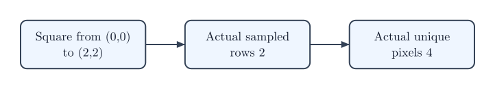
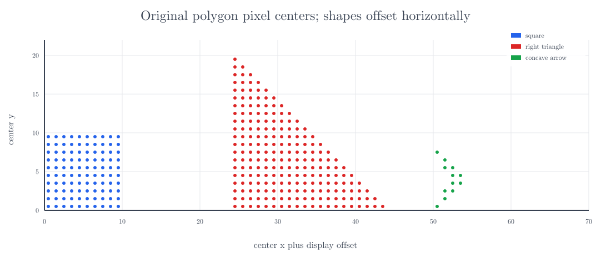
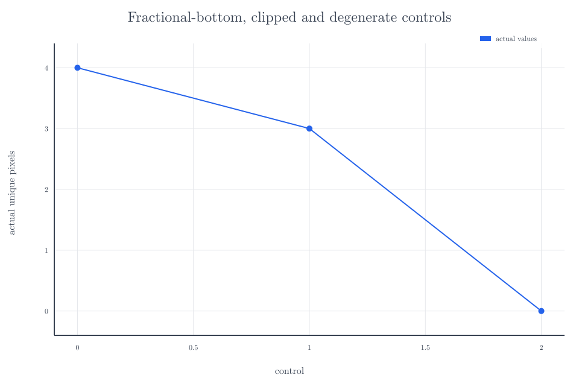
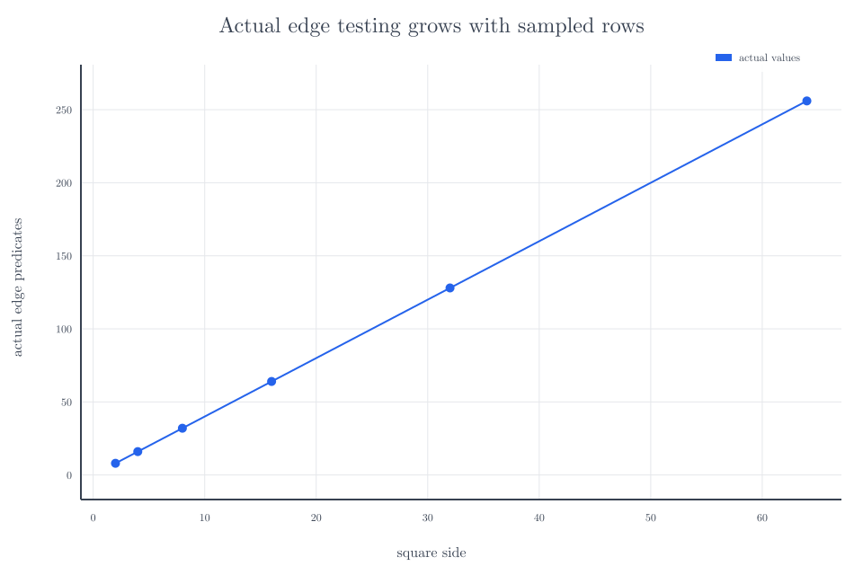

Scanline fill: actual pixel-center crossings and clipped integer spans
Abstract
Rasterize an ordered polygon into unique integer pixels by testing their centers. Actual row records show intersections and paired spans before the original square, right triangle and concave arrow fixtures.
Mechanism and mathematical scope
A row y samples ys=y+0.5. An edge crosses when min(ya,yb)<=ys<max(ya,yb), so horizontal edges do not cross and a shared vertex is counted once. Sort the actual x intersections and pair them by the even-odd rule. The historical horizontal endpoint policy emits integer columns
Candidate rows run from ceil(ymin-0.5) to ceil(ymax-0.5) exclusive. Integer spans are clipped and unioned before emission. Pixel count is not continuous area: the original twenty-by-twenty right triangle includes diagonal boundary centers and yields 210 pixels, although its continuous area is 200. Intersections use widened floating interpolation, not exact geometric predicates.
A tiny actual producing history
The table and native concept diagram read the same producing execution. Every block below is a complete editable C++ program.
#include <dm/dm.hpp>
int main() {
namespace a = dm::algorithms;
namespace g = dm::graphics;
std::filesystem::create_directories("build");
auto r = a::scanline_fill_trace({{0, 0}, {2, 0}, {2, 2}, {0, 2}});
std::print("| actual row | sampled center | actual sorted crossings | paired spans | merged spans |\n| " "---: | ---: | --- | ---: | ---: |\n");
for (const auto &s : r.rows)
std::print("| {} | {} | `{}` | {} | {} |\n", s.y, s.center, s.crossings,
s.paired.size(), s.merged.size());
g::Diagram concept_diagram(48, 1100);
concept_diagram.node("n0", {0, 0}, "Square from (0,0) to (2,2)");
concept_diagram.node("n1", {5, 0},
std::format("Actual sampled rows {}", r.scanlines));
concept_diagram.node("n2", {10, 0},
std::format("Actual unique pixels {}", r.pixels.size()));
concept_diagram.edge("n0", "n1").edge("n1", "n2");
concept_diagram.save_svg("build/scanline_fill_tiny.svg");
}| actual row | sampled center | actual sorted crossings | paired spans | merged spans |
|---|---|---|---|---|
| 0 | 0.5 | [0, 2] | 1 | 1 |
| 1 | 1.5 | [0, 2] | 1 | 1 |

The retained original experiment
#include <dm/dm.hpp>
int main() {
namespace a = dm::algorithms;
namespace g = dm::graphics;
std::filesystem::create_directories("build");
const std::vector<std::vector<a::Point2D>> polygons{{{0, 0}, {10, 0},
{10, 10}, {0, 10}},
{{0, 0}, {20, 0},
{0, 20}},
{{2, 0}, {6, 4}, {2, 8},
{4, 4}}};
std::print("| original shape | actual unique pixels | actual tested edges |\n| --- | ---: | ---: |\n");
const std::vector<std::string> names{"square", "right triangle",
"concave arrow"};
auto plot = g::RPlot::create();
for (std::size_t i = 0; i < polygons.size(); ++i) {
auto r = a::scanline_fill_run(polygons[i]);
std::print("| {} | {} | {} |\n", names[i], r.pixels.size(), r.edge_tests);
std::vector<double> x, y;
for (auto pixel : r.pixels) {
x.push_back(pixel.x + 0.5 + 24 * i);
y.push_back(pixel.y + 0.5);
}
plot.points(x, y, names[i],
i == 0 ? g::RGB{37, 99, 235} : i == 1 ? g::RGB{220, 38, 38}
: g::RGB{22, 163, 74}, 3);
}
plot.size(1100, 468).margins(80, 40, 72, 88).x_limits(0, 70).y_limits(
0, 22).title("Original polygon pixel centers; shapes offset horizontally").x_label("center x plus display offset").y_label("center y");
plot.save_svg("build/scanline_fill_original.svg");
}| original shape | actual unique pixels | actual tested edges |
|---|---|---|
| square | 100 | 40 |
| right triangle | 210 | 60 |
| concave arrow | 12 | 32 |

Explicit controls
#include <dm/dm.hpp>
int main() {
namespace a = dm::algorithms;
namespace g = dm::graphics;
std::filesystem::create_directories("build");
const std::vector<std::vector<a::Point2D>> v{{{0.2, 0.2}, {2.2, 0.2},
{2.2, 2.2}, {0.2, 2.2}},
{{-2, -2}, {2, -2}, {2, 2},
{-2, 2}}, {{0, 0}, {1, 1}}};
std::vector<double> x, y;
std::print("| control | actual pixels | actual rows |\n| ---: | ---: | ---: |\n");
for (std::size_t i = 0; i < v.size(); ++i) {
a::ScanlineOptions o;
if (i == 1) {
o.min_x = 0;
o.max_x = 0;
o.min_y = -1;
o.max_y = 1;
}
auto r = a::scanline_fill_trace(v[i], o);
std::print("| {} | {} | {} |\n", i, r.pixels.size(), r.scanlines);
x.push_back(i);
y.push_back(r.pixels.size());
}
bool bad = false;
try {
a::scanline_fill({{0, 0}, {1, std::numeric_limits<double>::infinity()},
{2, 0}});
} catch (const std::invalid_argument &) {
bad = true;
}
std::print("Nonfinite vertex rejected {}.\n", bad);
if (!bad)
return 1;
auto plot = g::RPlot::create();
plot.lines(x, y, "actual values", {37, 99, 235}).points(x, y, {37, 99, 235},
5).title(
"Fractional-bottom, clipped and degenerate controls").x_label("control").y_label("actual unique pixels");
plot.save_svg("build/scanline_fill_controls.svg");
}| control | actual pixels | actual rows |
|---|---|---|
| 0 | 4 | 2 |
| 1 | 3 | 3 |
| 2 | 0 | 0 |
Nonfinite vertex rejected true.

Actual selected work and sensitivity
#include <dm/dm.hpp>
int main() {
namespace a = dm::algorithms;
namespace g = dm::graphics;
std::filesystem::create_directories("build");
std::vector<double> x, y;
std::print("| square side | actual candidate rows | actual edge tests | actual output pixels |\n| ---: " "| ---: | ---: | ---: |\n");
for (double n : {2, 4, 8, 16, 32, 64}) {
auto r = a::scanline_fill_run({{0, 0}, {n, 0}, {n, n}, {0, n}});
std::print("| {} | {} | {} | {} |\n", n, r.scanlines, r.edge_tests,
r.pixels.size());
x.push_back(n);
y.push_back(r.edge_tests);
}
auto plot = g::RPlot::create();
plot.lines(x, y, "actual values", {37, 99, 235}).points(x, y, {37, 99, 235},
5).title(
"Actual edge testing grows with sampled rows").x_label("square side").y_label("actual edge predicates");
plot.save_svg("build/scanline_fill_work.svg");
}| square side | actual candidate rows | actual edge tests | actual output pixels |
|---|---|---|---|
| 2 | 2 | 8 | 4 |
| 4 | 4 | 16 | 16 |
| 8 | 8 | 32 | 64 |
| 16 | 16 | 64 | 256 |
| 32 | 32 | 128 | 1024 |
| 64 | 64 | 256 | 4096 |

API and interpretation
The specified horizontal-boundary inclusion is intentional. Fractional minima now sample every eligible center; output address conversion and integer loops are checked. Clip geometry before integer casts. Runtime is O(rows*vertices+crossing sorts+pixels), with independent row, edge, pixel and capture policies.
Reusable producers, fixtures and histories live in the canonical C++ library. Captured records own their values and do not come from a separate report replay. Selected counters and record/scalar policies are specified at their API boundaries; they are not peak-byte or wall-time budgets. Synthetic structural inputs are controlled fixtures for these mechanisms.
References
- Foley, van Dam, Feiner and Hughes, Computer Graphics: Principles and Practice, second edition (1990), scan conversion background
Verification: all four complete programs executed; all four figures were
rendered and visually reviewed. HTML and Markdown exports preserve every
computed table and image. This ten-topic batch passes 89 scoped native cases, 21
directly instrumented ASan/UBSan cases, 95 executable public examples, 469/469
scoped documentation definitions, ten representative editor hovers and 3677
independent oracle records with 28988 checks. Frozen compatibility checks record
the intentional final-posterior RVM change. Receipts:
build/mepml-conversion/batch-334-343/.